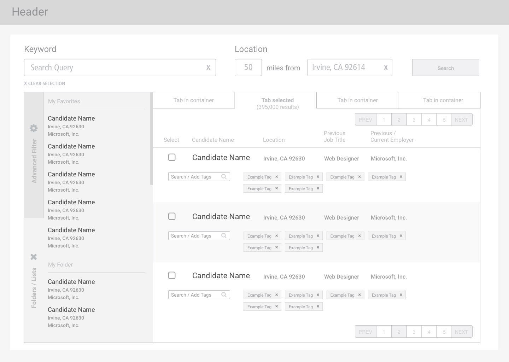
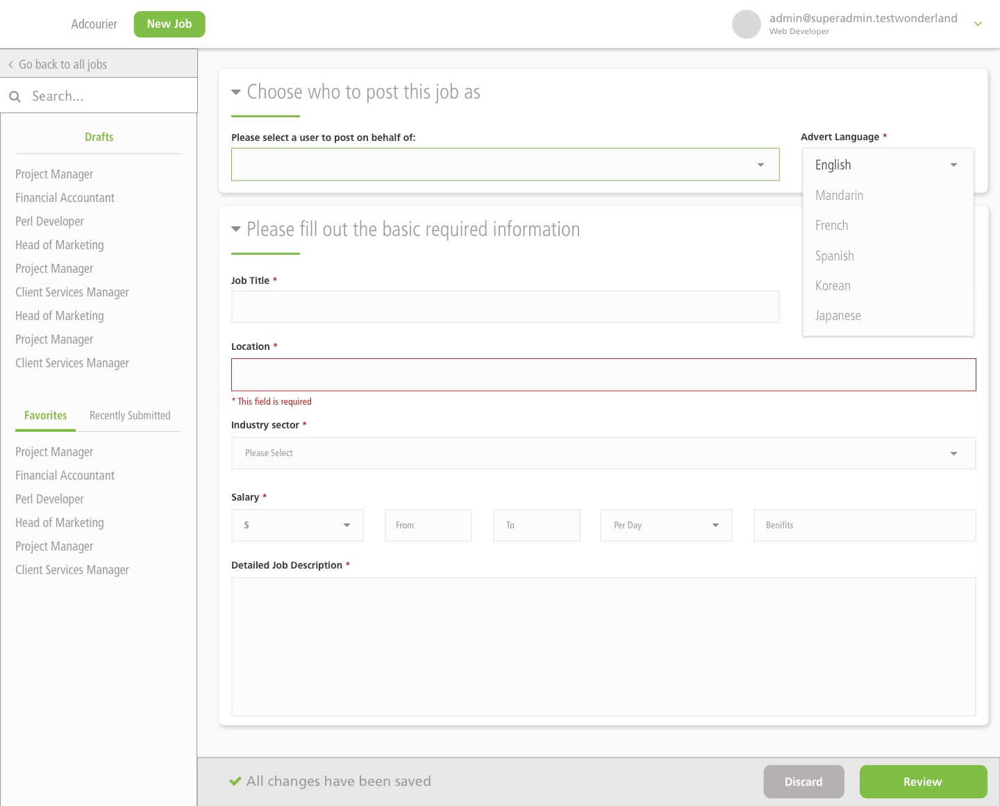

Big Data Analytics Suite
BDAS (Big Data Analytics Suite) is a enterprise level data analytics tool for recruiters and managers to quickly assess the various facets of their workflow. This includes geographical data, university data, job board source data, and many others. Having this data at their fingertips, recruiters will be able to formulate the most effective plan to allocate their resources to land the best candidates.
To comply with my non-disclosure agreement, I have omitted and obfuscated confidential information in this case study. The information in this case study is my own and does not necessarily reflect the views of Broadbean.
My Role
I worked with our small team of designers to build out numerous reports for BDAS, and many times led the effort of constructing the layout of the reports.
My work consisted of UX Research (user testing), UX Design (prototyping), and UI Design (visual design).
Filtering
BDAS consists of over ten reports showing the different aspects of the clients' business. Each of these reports can be filtered by different criteria, as well as relational filters that depend on previous selections. Thus, the filtering functionality for selecting a report is critical for the client. Our team spent a lot of time coming up with a simplified design to tackle this complex problem that allows the user to quickly select previously chosen filters/reports, as well as save their most used. New reports can be run by manually selecting filters based on their needs.

Data Reports
BDAS consists of over ten reports showing the different aspects of the clients' business. Each of these reports serve a different purpose. I've outlined just a few here. Feel free to contact me for more examples.
Summary of Inidividual Placed Job: The purpose of this report is to give the user a deep look at a specific job that has already been placed. At a glance, the user is able to see how long it took, how much it cost, and the most efficient job boards that they used.
Summary of Open Jobs: Users pull up this report to investigate which jobs are still open and not yet filled, then drill down a bit deeper to a particular open job. At a glance, the user is able to see how many jobs are currently open, what their current pipline of candidates looks like, and how much they're spending on these open jobs.
Summary of Inidividual Open Job: Following the Summary of Open Jobs report, users will be able to choose a certain open job and investigate why exactly that job is still open. They'll be able to determine how many jobs have been placed in the last year, current pipeline of candidates, total cost, as well as additional information to help them find a placement.
Aging Jobs: This report allows the user to get a bird's eye view of jobs that have been aging and have not yet been filled. The main purpose is to give hiring managers an overall look at all the jobs their team is responsible for, and figure out which jobs are the lowest performers in order to determine a proper course of action.
Candidate Timeline
The goal of our posting form is to allow the user to quickly fill in the fields needed to publish their job posting as quick as possible. Our previous design presented all the fields in a linear fashion, which commonly reached hundreds of fields to fill out. Our challenge during the redesign consisted of coming up with logical groupings for the text fields, as well as recommended inputs derived from job assocations and data analytics.
Candidate Management
The candidate management tool in CSP allows users to get a detailed view at their current, to see their resume, detailed information, and any communication the recruiting team has had with the candidate. This functionality quickly devolved into a complicated and confusing screen for the user. Our team was given the task to clean up the screen and logically lay out the functionality for the recruiters. The main feature for this redesign was to give the recruiters a quick look at the history of communication for the user, and also give the recruiter the ability to quickly make notes about the candidate.

Results
CSP is still a work in progress and is constantly being revised and iterated upon. The initial redesign that we have accomplished helped streamline the entire process of finding a candidate for recruiters. The modern, updated look was well received across the board, but introduced its own set of problems.
Ongoing Work
As with any software redesign, a learning curve will rear its head once the changes have been launched. We're currently working with users to guide them on how to use the new features as intended as well as document any improvements that are suggested.